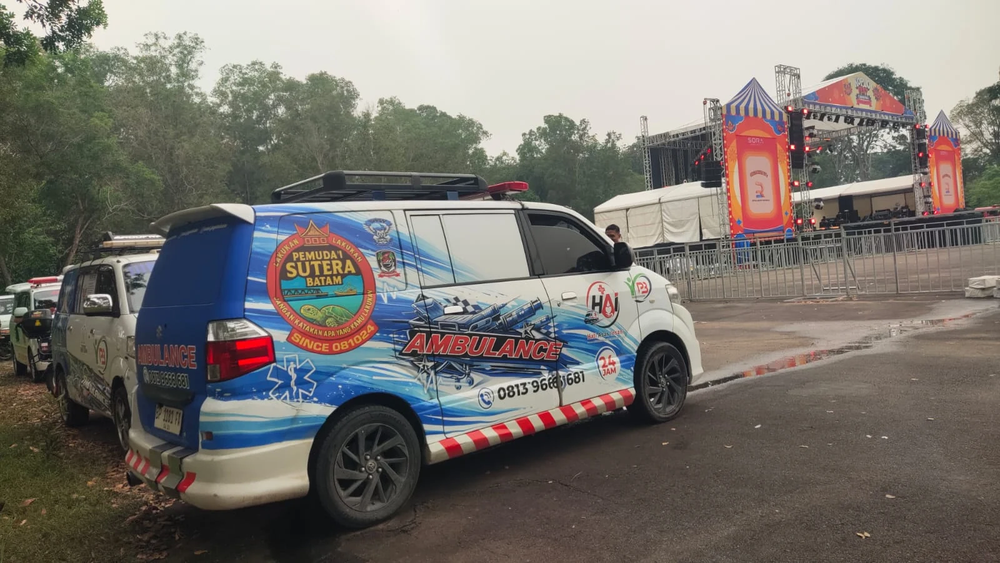
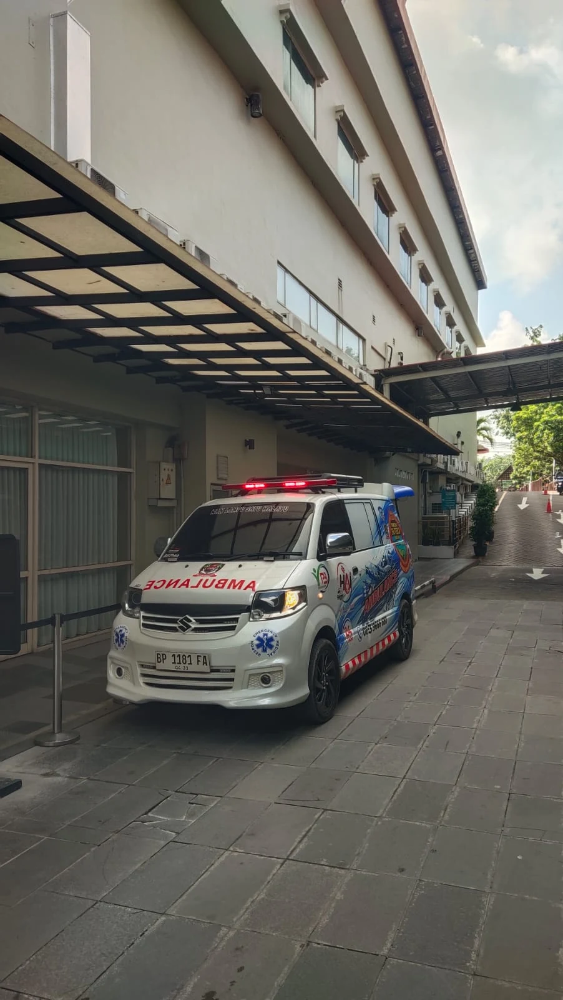
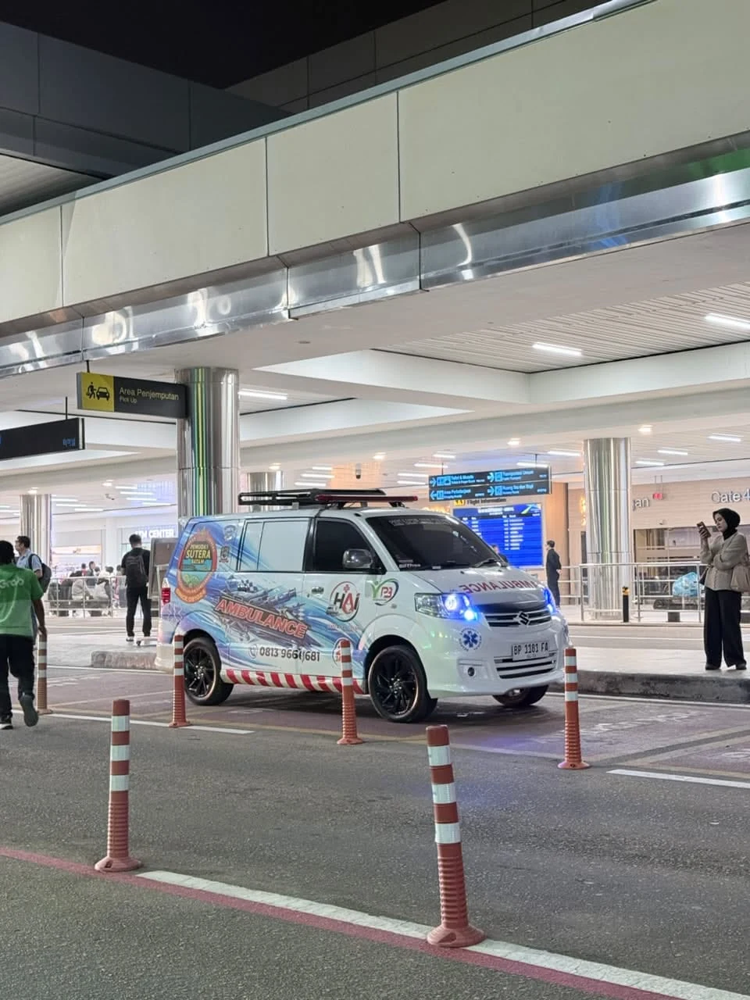
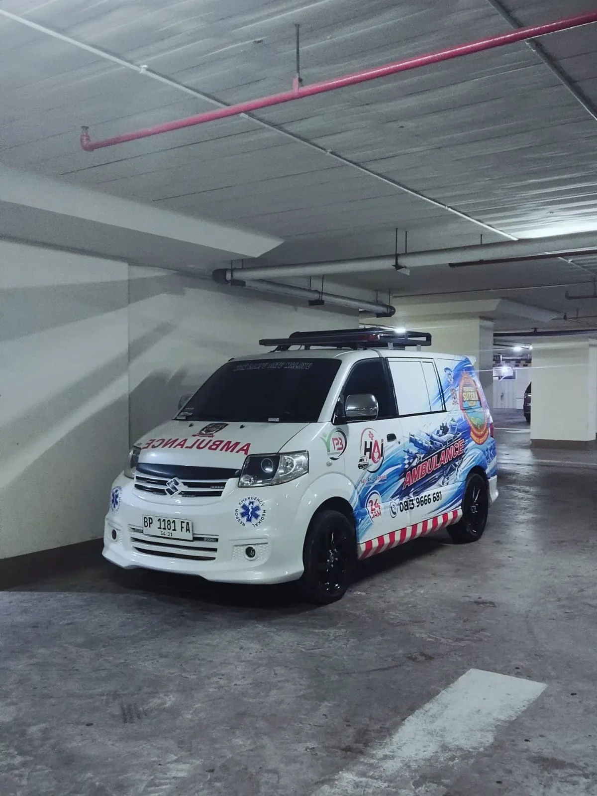
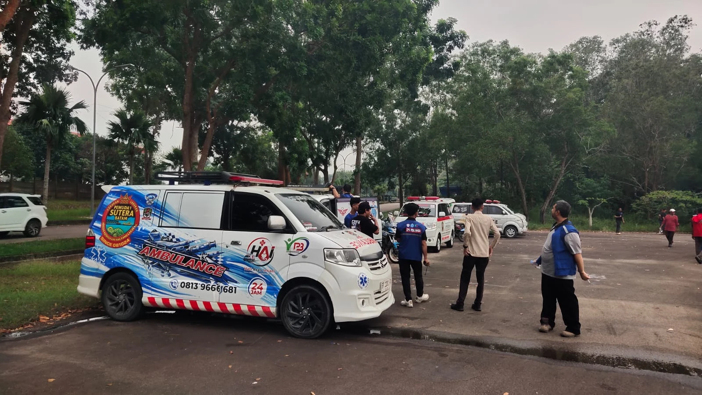

Ambulans
Layanan transportasi ambulans untuk membantu kebutuhan antar-jemput pasien sesuai kondisi dan kebutuhan perjalanan.
KJB (Kami Jaga Batam) hadir dengan layanan ambulans dan dukungan medis yang berangkat dari kepedulian nyata. Kami berupaya menjadi bagian dari pertolongan yang dibutuhkan masyarakat Batam dan sekitarnya.


KJB (Kami Jaga Batam) dibangun oleh Pak Nizarwan pada akhir tahun 2025, berangkat dari sebuah pengalaman keluarga yang membekas. Saat salah satu anggota keluarganya membutuhkan bantuan, keluarga Pak Nizarwan mengalami kesulitan mencari layanan ambulans. Waktu terus berjalan, sementara penanganan medis yang dibutuhkan tidak bisa menunggu. Keterlambatan itu menjadi pengalaman pahit yang kemudian menumbuhkan tekad dalam dirinya.
Pak Nizarwan tidak ingin pengalaman serupa terus dialami keluarga lain. Dengan kondisi dan kemampuan yang ada, beliau mulai menyisihkan sebagian gajinya setiap bulan dari pekerjaannya sebagai karyawan ekspedisi DHL. Sedikit demi sedikit, tabungan itu dikumpulkan untuk mewujudkan cita-cita menghadirkan layanan ambulans.
Perjalanan tersebut bukan sesuatu yang instan. Ada kesabaran, pengorbanan, dan keyakinan yang menyertainya. Hingga akhirnya, cita-cita Pak Nizarwan untuk membangun layanan ambulans dapat terwujud melalui KJB — Kami Jaga Batam.
KJB berupaya memberikan dukungan transportasi dan pelayanan medis sesuai kebutuhan serta ketersediaan tim.
Layanan transportasi ambulans untuk membantu kebutuhan antar-jemput pasien sesuai kondisi dan kebutuhan perjalanan.
Dukungan pemindahan atau evakuasi pasien dengan memperhatikan kebutuhan keselamatan dan kondisi pasien.
Layanan transportasi jenazah dengan mengedepankan kepedulian, rasa hormat, dan komunikasi yang baik dengan keluarga.
Dukungan petugas medis untuk kegiatan, acara, atau event sesuai kebutuhan penyelenggara dan ketersediaan personel.
Beberapa dokumentasi armada ambulans KJB dalam aktivitas dan kegiatan pelayanan.



Ikuti informasi dan dokumentasi kegiatan KJB melalui Instagram resmi kami.
Untuk informasi layanan dan kegiatan, silakan kunjungi kanal resmi KJB.
Siaga untuk menjaga sesama.
WhatsApp: +62 813-9666-6681
Email: ambulance_kjb@gmail.com
Hubungi WhatsApp Kirim Email